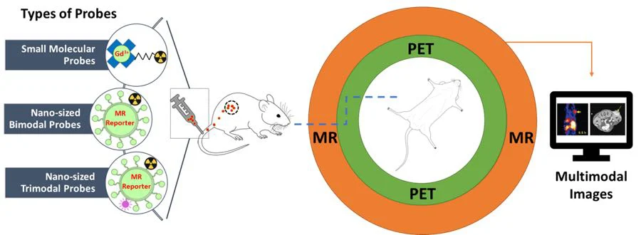
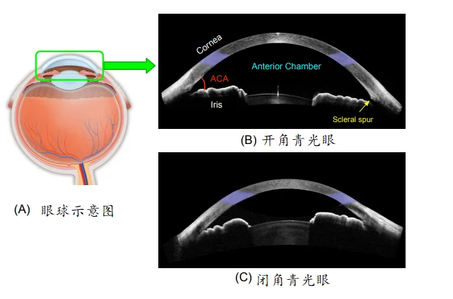

2019年iMED中国连中国际顶级3篇1区文章！
近日，医学影像事业部（iMED中国团队）分别在数学、人工智能以及生物医学领域连续发表三篇SCI一区论文，进一步体现了慈溪医工所在多学科交叉方向的优势。
特发性震颤疾病研究
赵一天副研究员在数学跨学科应用领域1区杂志《COMPLEXITY》 (IF: 1.829)上发表研究成果 A Wavelet-Based Correlation Analysis Framework to Study Cerebromuscular Activity in Essential Tremor。文章提到，深部脑刺激（DBS）能为严重的特发性震颤（ET）患者提供了显著的震颤缓解。
VIM核通常被认为是给这些患者高频电刺激来缓解症状的最有效的脑区域。通过丘脑DBS导联的电局部场电位（LFP）记录来分析对侧颤抖肢体的电肌肉活动之间的相关性已成为解释LFP与颤抖临床表现的相关性的实用工具。尽管脑电记录和来自震颤的肌电图（EMG）信号之间的功能连接性分析已经引起越来越多的工程研究人员的兴趣，但是目前没有广为接受的分析框架来一致地表征丘脑电记录与震颤肌电图之间的关联。
针对这个需求，赵一天等人提出了一套全新的利用小波交叉谱和相位滞后指数以及他们的显著性来描述相互作用强度的分析框架。基于仿真和实际数据的结果都证明了所提框架具有较高的可行性和鲁棒性。利用该框架，本论文揭示了DBS和LFP在低频区域，其动态相互关系具有较强的显著性，而在高频区域，其显著性相对较弱。这项研究提供证明了该框架可用于揭示VIM丘脑LFP-EMG相互作用，以（i）更好地理解震颤的病理生理学; （ii）客观选择最高的DBS电极触点与震颤EMG相关的强度，这是在临床实践中实施新型多接触定向导联的一个特别有用的特征; （iii）帮助未来对DBS闭环设备的研究。
双影像分子探针新观点
杨长通研究员（客聘）和刘江研究员共同在生物医学1区杂志《Theranostics》(IF: 8.537)上发表综述：PET-MRand SPECT-MR multimodality probes: Development and Challenges，文章系统地阐述PET-MR双影像连用的分子探针的发展概况，分析双影像分子探针未能用于临床的原因，对发展双影像分子探针提出了自己的观点。
文章对所有迄今报道的139种PET-MR双影像连用探针都进行了归纳，总结出主要有三大类型：小分子的PET-MR双影像连用探针；纳米材料做成的PET-MR双影像探针，以及集三种影像于一体，除PET、MR两种影像之外，还有第三种影像如荧光的三影像连用的分子探针。这是第一篇在PET-MR双影像分子探针领域的全面综述。

杨长通长期从事正电子发射断层扫描标记物和核磁共振成像显影剂这两个方向的研究，此次文章对发展可用于临床的双影像分子探针提出了一些解决思路，比如从制备多功能纳米材料入手，根据两种影像技术的不同灵敏度，对PET 和 MR 探针的功能性进行不同的靶向修饰从而达到双影像连用。
新型AS-OCT闭房角筛查算法
闭角青光眼是导致不可逆视觉损害的主要疾病之一，其主要可以通过观测前房角区域以及配合全局特性来进行诊断。眼前节光学相干断层扫描（AS-OCT）设备提供了一种前房角观测的清晰成像方式，被广泛使用于闭角青光眼筛查。但是人工筛查需要多年经验的医生，以及配合各种临床参数的准确观测，这无疑限制的其大范围的使用。同时，一些全自动 AS-OCT 检测算法被提出，但是他们大都是依赖人工视觉特征来进行表述，并且忽略不同图像区域的特征。

付华柱和刘江等iMED成员提出了一种新型的基于多级层深度网络的AS-OCT闭房角筛查算法。该算法结合全局尺度、虹膜尺度、以及房角尺度等多种级层尺度，挖掘不同关注区域的图像表述特征，以此来提高检测结果。在两种 AS-OCT 成像设备的青光眼检测数据库（Visante 和 Cirrus）上，算法均取得了最佳结果 （AUC 成绩高于 0.95），领先于其他相关算法。该算法被人工智能顶级期刊 IEEE Transactions on Cybernetics （IF：8.803） 录用。文章题目：Angle-Closure Detection in Anterior Segment OCT based on Multi-Level Deep Network。